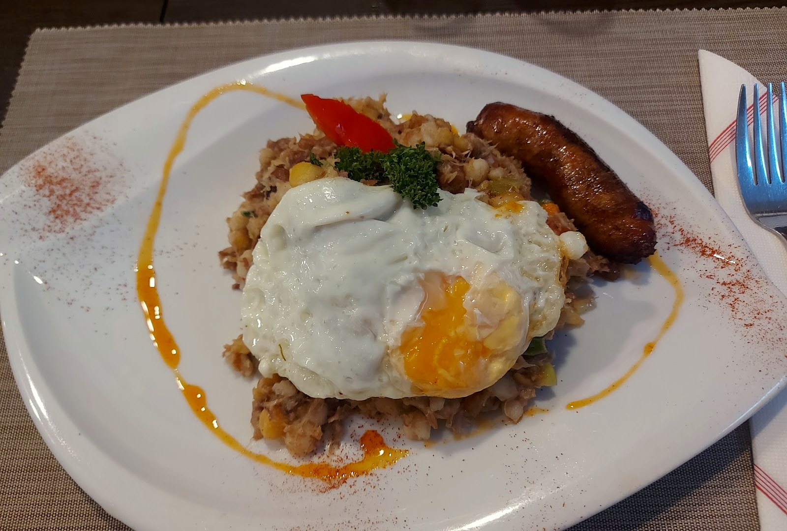
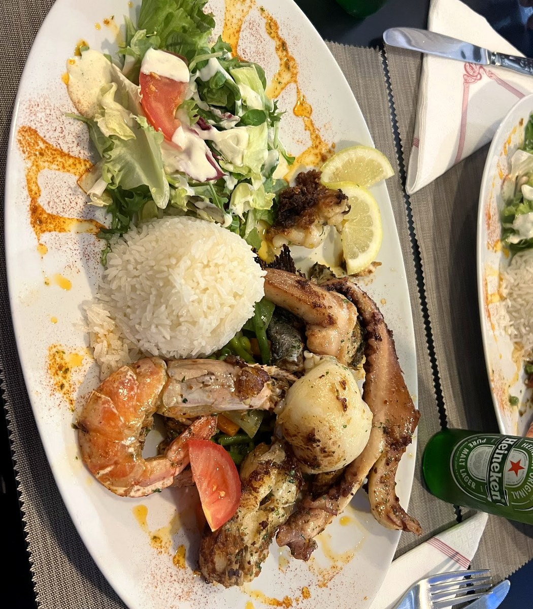
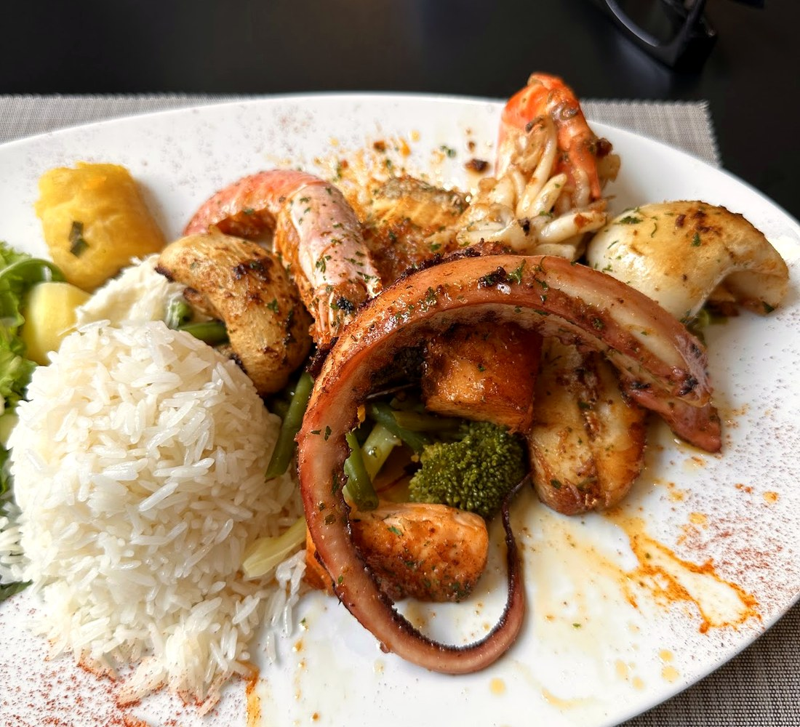
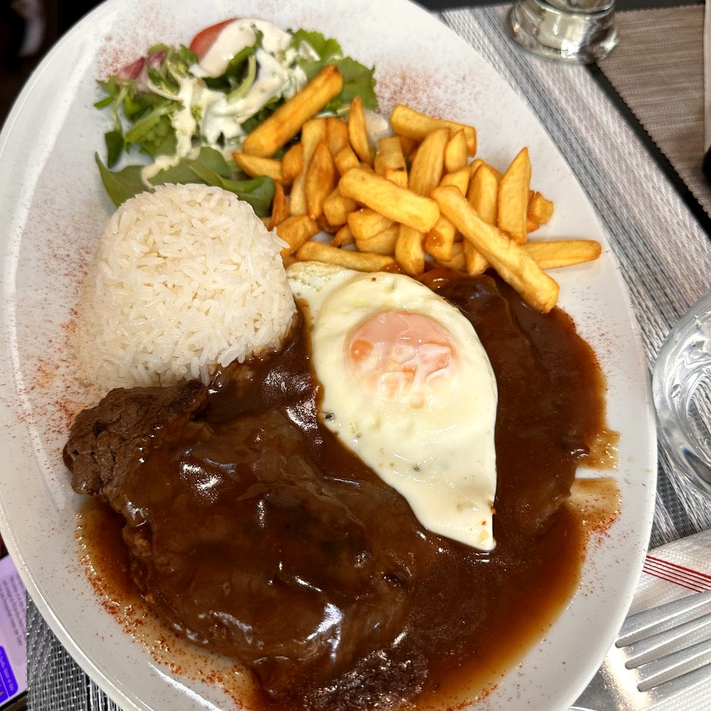
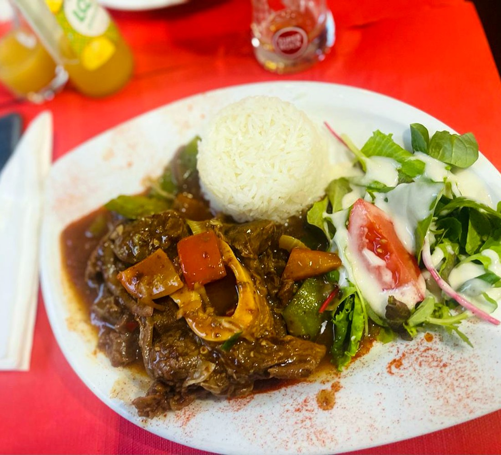
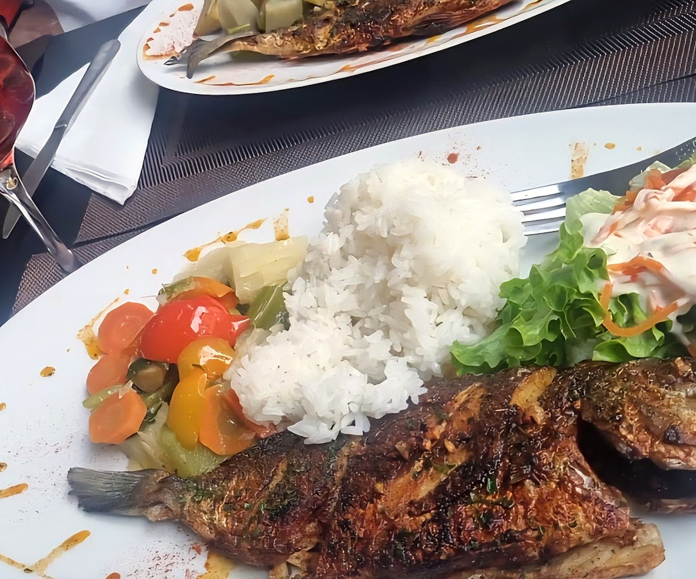
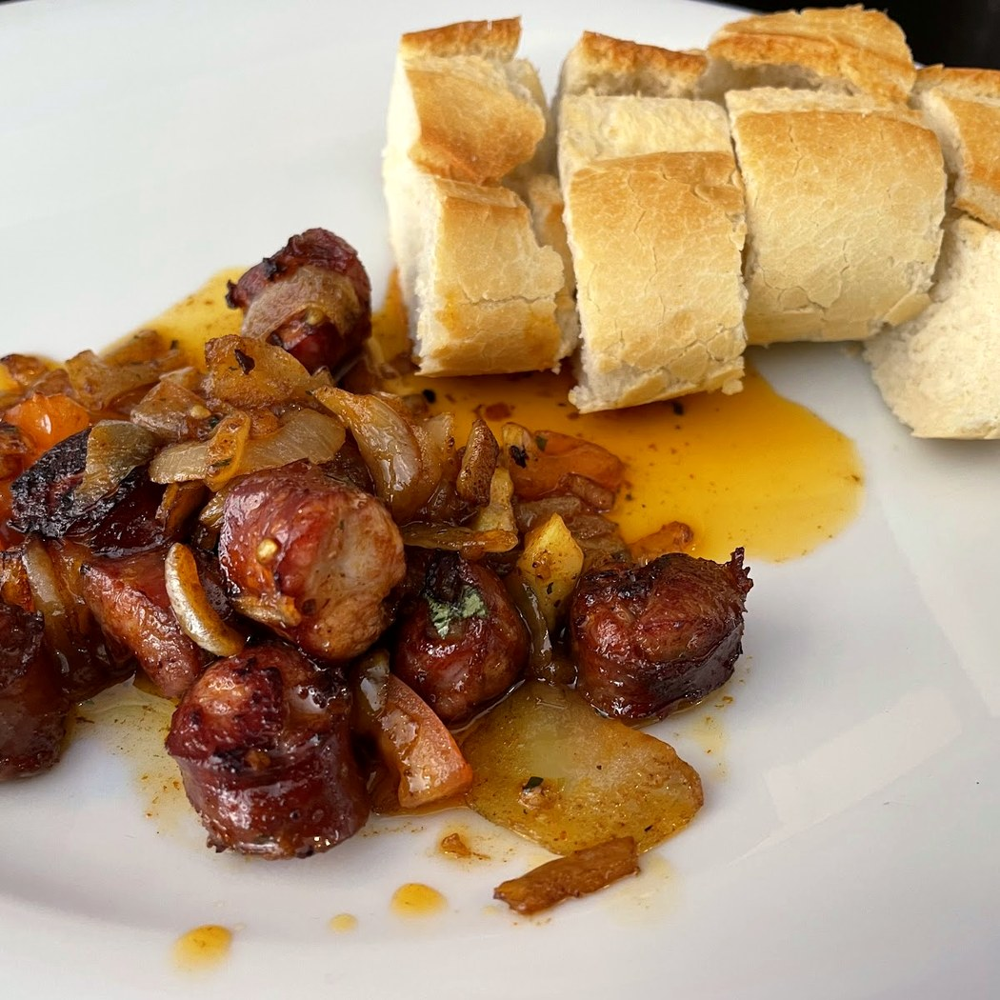
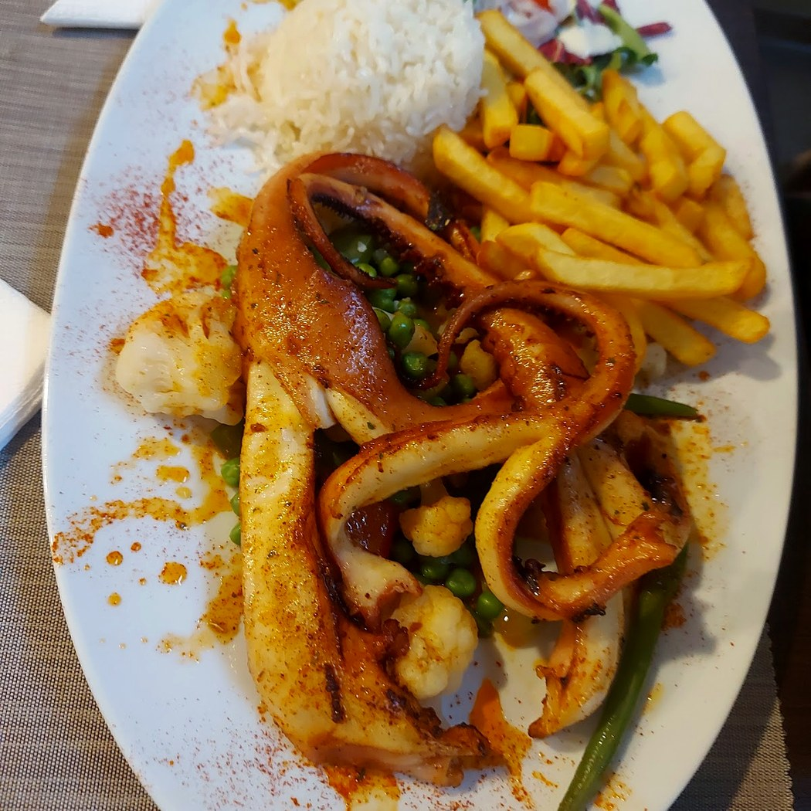
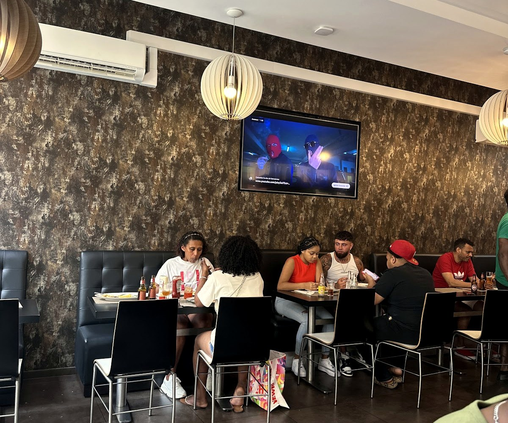

Sabordi Terra
Le goût de la terre : la cachupa, le poisson de l'Atlantique et la morabeza — la table des îles du Cap-Vert, à Esch.
Le poissonde l'Atlantique.
Poisson et fruits de mer grillés, avec du riz, des légumes et une salade — la mer des îles, dans l'assiette.
Aux îles du Cap-Vert, la mer est partout. Ici, on la grille simplement : le poisson frais, les gambas, le tout servi généreusement. Avec la cachupa mijotée et les plats de la maison, c'est toute la table cap-verdienne.

Grillé, généreuxLa table des îles
Bitoque, poisson et fruits de mer grillés, ragoûts mijotés, chouriço — une cuisine généreuse, celle des maisons cap-verdiennes.







Ce qu'on sert
La cuisine des îles, généreuse et sans détour. Voici les plats de la maison — les prix se confirment sur place.
Les plats des îles
À grignoter & à boire
La mer & le grill
Le midi
Plats relevés à partir de sources publiques (la carte de la maison, avis, annuaires) ; aucun prix n'est publié en ligne (fourchette ~10–20 €). Carte et prix à confirmer avec la maison.
Le goût de la terre,l'accueil des îles.
« Sabor di terra » veut dire le goût de la terre, et « morabeza », cette hospitalité chaleureuse propre au Cap-Vert. C'est tout l'esprit de la maison : une table de quartier, généreuse, où l'on se sent chez soi — et parfois, la musique des îles.
Nous trouver
L-4030 Esch-sur-Alzette
Midi & soir · horaires à confirmer